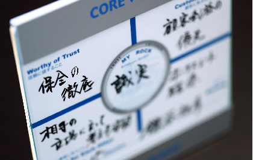

―― 鎌谷さんが普段取り組んでいらっしゃる保全活動について教えていただけますか？
鎌谷：まず、私には2600件ぐらいのお客様がいらっしゃいます。個人のお客様だけなら800世帯程度だと思うのですが、その方々を毎年お伺いするのはやはり物理的に無理なので、いわゆる「私が傍にいる」ということを印象付けるためのツールとして、まずは暑中見舞いをオリジナルで作っています。買ったものではなく自分で画像を考えています。それから、バースデーカードは毎年絵柄を変えてお送りしています。
宛名は手書きで1日8枚ぐらい書いています。実際に会社に来ることができない日は20枚とか30枚ぐらい書きます。
聞き手：バースデーカードには、お客様宛に何か一言ずつ添えられているのでしょうか？
鎌谷：表の字は全部、私が自分で書いています。私のお客様は大体、私の字のクセをわかっていらっしゃいます。後ろにワンコメント書く方もいらっしゃれば、そのまま出す方もいます。
あとは年賀状ですね。入社した時に先輩から「続けられない保全なら、しない方がマシ」と言われました。「続けられるもの、自信のあるものだけやりなさい」と言われたので、年賀状と暑中見舞い、バースデーカードは入社してからずっと続けています。時々、止めたい時もあるのですが…（笑）。
年賀状は私の家族全員で写っている写真を載せています。
聞き手：鎌谷さんのご家族の写真ですか？
鎌谷：普通、業者から年賀状をもらっても自分の年賀状は返さないですよね。例えば、車のディーラーなど車がデザインされていて、いかにも会社から差し出されたような体裁で宛名も印刷された年賀状。そういうものにはお客様は多分返信されない。私の場合は個人が差し出したような風で出しているので、お客様も毎年ご家族の様子を写真で知らせてくれる方が結構いらっしゃいます。
聞き手：そうすると、そこでご家族の構成も判るということですね。
鎌谷：そうです。「あ、子どもさんが増えているな」という風に。
年始めに何かプラス情報があったものをちゃんと集めて、お電話を差し上げるという感じです。「あ、家を改築している」とか「新築している」とか、写真から判ることがあります。ご実家に住んでいるとか、お家を建てるとお家の前で撮ったりする方が多いので。
―― 一週間の活動時間全体を10とした場合、新規のご契約と保全、その他の活動を比率で表すとどんな感じになりますか？
鎌谷：2:8ぐらいでしょうか。
実は常にどなたかが入院されているとか、そんな状態ですので。
聞き手：それは鎌谷さんのような長いキャリアでは、段々とそうなってくるものなのでしょうか？
鎌谷：そうなると思います。私と同じようにお客様も年を取っていらっしゃいますから。例えば30歳ぐらいで保険に加入された方が、もう55歳くらいになっていらっしゃるわけです。仮に1000人程度お客様を担当していたら、常にどなたかが入院している状況になると思います。
―― 長いキャリアのなかで、保全に関する具体的な取り組み方が、年数とともにどのように変化されたのかお聞かせください。
鎌谷：最初の頃の保全というのは、どうしても「保全活動からの新たな紹介入手」という目的があった上でやっていたと思います。しかし、私ぐらいの年齢になると、お客様も結構お年を重ねられているので、ある一定の時期から保険が追加できない健康状態になってしまう方もいらっしゃるわけです。そういう意味では、その方のニードが少なくなって保障を減らすのはいいのですけど、何かニードが変わっていて、保障を増やす必要性があるのであれば、そこは早く行かないと自分のお客様であるにも関わらずお役に立てないという恐怖感みたいなものが、ある程度キャリアが長くなってから出てきます。
逆に言えば、追加契約の目的ではなく、こちらから保全の機会を設けて「内容をもう一度見直しましょう」とお客様に語りかけることが必要になってくると思います。私はそういうスタンスで話をするようにしています。そこには担当として自分の責任を全うすることが出来なくなってしまう、という恐怖感があるからで、「もうちょっと保険を増やさなければダメですよね」と言った時に、「去年、実は身体が悪くなったのだけど」みたいなことになった瞬間にダメじゃないですか。「癌が見つかった」と連絡があった時には、その人に対してはもうその時点で「増やす保全」は出来ないのです。でも、もし内容を減らしてもいいかなと思う方でも、仮にそういう状況で減らす方はいらっしゃらないので、必要とされている方には早く伺わなければならないと何年か前から感じています。
「私と、保全活動」 バックナンバー
2019年


2020年


2021年


※職位、略歴は取材時の情報です